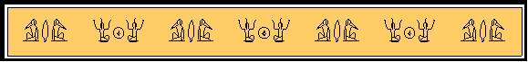

RAWN'S COMMENTARY UPON THE EMERALD TABLET OF HERMES
© 1996
Prologue
The Emerald Tablet (ET) of Hermes is the foundation of western Alchemical thought and practice as we know it today. Alchemy is, essentially, the practical application of the Hermetic Philosophy, contrary to the common perception which sees Alchemy as a mere lust for gold. In my commentary, I will examine the ET as a statement of Hermetic and Alchemical philosophy.
The exact origin of the ET lies shrouded in mystery. Opinions vary widely, from the scholarly theory that it originated in the early period of Arabic alchemy, to the speculative fantasy of an Atlantean origin. The original document has not survived and all we are left with are translations of it. There are in fact, quite a few different translations of the ET available, and I have chosen to use the 12th century Latin translation from Steele and Singer (1928:p.492). I have however, constantly referred to my library of translations (14 in all) throughout my commentary, as each difference in wording produces a slightly different interpretation. I have tried to blend the meanings of the many into my comments upon this single version.
In the past 200 years, several Arabic translations have been discovered and rendered into English as well. One of these Arabic versions contains lines that claim the ET to be the testament of a person named 'Balinas', who enters a cave and sees Hermes sitting there holding an "emerald" (meaning "green stone", not necessarily that it was specifically an emerald) tablet upon which were written certain words in ancient Syriac. Apparently, Balinas left the cave and subsequently wrote down (or transmitted orally) what he saw engraved upon Hermes' tablet. Whether historically accurate or not, these lines preface the ET with a valuable mythological image: the inner search for meaning.
1) TRUE, WITHOUT FALSEHOOD, CERTAIN, MOST CERTAIN.
2) WHAT IS ABOVE IS LIKE WHAT IS BELOW, AND WHAT IS BELOW, LIKE THAT WHICH IS ABOVE. TO MAKE THE MIRACLE OF THE ONE THING.
3) AND AS ALL THINGS WERE MADE FROM CONTEMPLATION OF ONE, SO ALL THINGS WERE BORN FROM ONE ADAPTATION.
4) ITS FATHER IS THE SUN, ITS MOTHER IS THE MOON.
5) THE WIND CARRIED IT IN ITS WOMB, THE EARTH BREAST FED IT.
6) IT IS THE FATHER OF ALL WORKS OF WONDER IN THE WORLD.
7) ITS POWER IS COMPLETE IF TURNED TOWARDS EARTH, IT WILL SEPARATE EARTH FROM FIRE, THE SUBTLE FROM THE GROSS.
8) WITH GREAT CAPACITY (WISDOM) IT ASCENDS FROM EARTH TO HEAVEN. AGAIN IT DESCENDS TO EARTH, AND TAKES BACK THE POWER OF THE ABOVE AND THE BELOW.
9) THUS YOU WILL RECEIVE THE GLORY OF THE DISTINCTIVENESS OF THE WORLD. ALL OBSCURITY WILL FLEE FROM YOU.
10) THIS IS THE WHOLE MOST STRONG STRENGTH OF ALL STRENGTH, FOR IT OVERCOMES ALL SUBTLE THINGS, AND PENETRATES ALL SOLID THINGS.
11) THUS WAS THE WORLD CREATED.
12) FROM THIS COMES MARVELOUS ADAPTATIONS OF WHICH THIS IS THE PROCEDURE.
13) THEREFORE I AM CALLED HERMES THRICE-CROWNED BECAUSE I HAVE THREE PARTS OF THE WISDOM OF THE WHOLE WORLD.
14) AND COMPLETE IS WHAT I HAD TO SAY ABOUT THE WORK OF THE SUN.
Commentary
1) TRUE, WITHOUT FALSEHOOD, CERTAIN, MOST CERTAIN.
The Emerald Tablet (ET) begins by stating that its words are universally true. There are many, many levels of Truth, and the ET here specifies that its words apply on all of these levels. In this way, the ET gives us a key by which to test our understanding of its words...if at any level of our experience, these words do not ring true, then our understanding of them must needs be broadened.
2) WHAT IS ABOVE IS LIKE WHAT IS BELOW, AND WHAT IS BELOW, LIKE THAT WHICH IS ABOVE. TO MAKE THE MIRACLE OF THE ONE THING.
Here the ET defines THE ONE THING as an Infinite Continuum. The term ABOVE (or any of its variant translations) establishes two concepts: 1) the starting point from which there is an ABOVE; and 2) an unlimited upwardness. The term BELOW likewise, establishes: 1) the starting point from which there is a BELOW; and 2) an unlimited downwardness. The statement that ABOVE IS LIKE WHAT IS BELOW, and vise versa, places them on a continuum of alikeness. This creates an Infinite Continuum with only one THING clearly defined -- the Center, from which ABOVE and BELOW stretch infinitely.
In an Infinite Continuum, Center occurs any and every who, what, when, where and why. There is no point along the Continuum from which ABOVE and BELOW do not extend infinitely, and thus, equally. In this sense, the Infinite Continuum is a ONE THING.
I call this ONE THING: Self. It includes all THINGS and all not-THINGS, and is perhaps the most inclusive and powerful Continuum we can posit. Such a Continuum places us in relation to a bird in a tree, an other person, a substance worked with in an alchemical laboratory, an Archangel, disparate aspects of our personality, a river, to essentially anything we can imagine.
Within the Continuum, there is no such thing as a MIRACLE in that the word implies an occurrence outside of Nature's Laws. The perspective of Hermetics is that what we assume to be miraculous is merely the interplay of Nature's Laws in ways that we do not comprehend, and not a breaking of those Laws. With that in mind, the ET's statement of the MIRACLE OF THE ONE THING, implies that only at the level of the whole of the Infinite Continuum, is the truly miraculous an actuality; and, that everything we do here within the Continuum, is merely the manipulation of Nature's Laws.
3) AND AS ALL THINGS WERE MADE FROM THE CONTEMPLATION OF ONE, SO ALL THINGS WERE BORN FROM ONE (by) ADAPTATION.
Having established the Infinite Continuum of Self -- THE ONE THING -- the ET now turns to a discussion of the production of life within this Continuum. The ET posits the ONE as "All Mind" and states that all THINGS arise from the CONTEMPLATION (meditation) of this ONE. Each of these THINGS, within the Continuum of Self, are self-conscious aspects of the ONE, of the All Mind, mirroring the power of the ONE, and must follow the methods of the ONE. So, as the ONE "makes" THINGS by CONTEMPLATION, these THINGS must then "birth" what they desire by a similar process -- by ADAPTATION of the process followed by the ONE.
4) ITS FATHER IS THE SUN, ITS MOTHER IS THE MOON.
5) THE WIND CARRIED IT IN ITS WOMB (belly), THE EARTH BREAST FED (nursed) IT.
6) IT IS THE FATHER OF ALL WORKS OF WONDER IN THE WORLD.
The ET now describes this "adapted" process of creation. As it applies to all things, my discussion here will of necessity, be able to cover only a few aspects of its applicability.
The imagery used is that of the human generative process (FATHER, MOTHER, WOMB, BREAST FED), which is concurrently correlated to geo-centric symbols (SUN, MOON, WIND/AIR, EARTH). As an equation, it looks like this:
FATHER/SUN:
This is the archetype of Force (as opposed to Form), of light (as opposed to dark), of Fire (as opposed to Water), of thought (as opposed to physical matter). It is half of a polarity -- its existence implying the simultaneous existence of its opposite pole (MOTHER/MOON).
Force, energy, creative intent, Mind, Yod, whatever level of this archetype one employs, it always seeks expression in Form. In an Hermetic sense, each specific vibration seeks expression through the levels of vibration which are directly below it. So each specific vibration is the expression of that which lies above it, and simultaneously, expresses itself through the levels below it. The creative process outlined in this section of the ET, is a "downward" movement of Force into Form (the "upward" movement of Form into Force, comes later). The sperm of the FATHER, seeks the egg of the MOTHER; the rhythm of the SUN (12) is bound to the EARTH by the rhythm of the MOON (13); the Individuality expresses itself through the personality; the mental infuses the astral; the light knows itself only when piercing the dark; Chokmah enters Binah.
MOTHER/MOON:
This is the archetype of in-Form-ing. It is the continuous movement of energy down the scale of vibration, expressing itself through ever denser manifestation. It receives the SUN's rays, changes them, and then reflects them to the EARTH; it wraps its WOMB around the egg which has captured the seed; it is the first Heh of Yod-Heh-Vav-Heh; Binah transformed by the seed of Chokmah, from her state of Dark Sterile Mother, to that of Bright Fertile Mother.
Creation is primarily a MOTHER's Work, and this is shown by the next symbols which are aspects of the MOTHER archetype.
WIND/WOMB:
In classical Hermetic treatment of the Elements, Air is seen as the product of Fire and Water, representing a synthesis of the two. Air acts as the intermediary between Fire and Water, and is in effect, produced by their interaction. Each, implies the existence of all three -- they exist only in combination. If we posit Fire as "upwardness", and Water as "downwardness", then Air would be a state of non-movement, a center between the two. Air has no movement of its own accord, yet adopts any movement which is impressed upon it. In the ET's equation, the movement impressed upon the Air is downward. Here the Air is WIND, implying a Force behind it, and stressing that it is an expression of this Force. This expression acts as a WOMB, carrying the creation through gestation to birth. The Air clearly acts here as the agency of a downward Force in its accretion of Form.
In Qabbalistic terminology, this is Tiphareth as the product of Chokmah and Binah; but in its active downward flow towards Malkuth. The Vav of YHVH in its aspect of seeking downward expression through the Heh-final. This is the inclusion of the other planetary influences into our earthly experience by the cycles of Sun and Moon. This is the Individual Self of the "Adept's consciousness", which expresses itself through the personality and physical body.
EARTH/BREAST FED:
Fire + Water + Air = Earth, is a common conception of the Element's relationship; but at an archetypal level. Practically and functionally however, Earth is experienced as an individual Element just like Fire, or Water. This is the archetype of Form itself. Whereas Water is the tendency to Form, Earth is the product of this tendency, the final clothing given to Force in its descent into expression. The EARTH nourishes the creation, giving it solid and independent form.
This is Tiphareth clothed in Yesod, and manifest in Malkuth. The Heh-final of YHVH. This is the Individual Self, expressed through the personality, within a physical body.
FATHER OF ALL WORKS OF WONDER IN THE WORLD:
These four Elements combined, plus the Fifth -- the conscious awareness of the creator -- result in independent life. The ET symbolizes this here by describing the result as a FATHER, which brings us back to the beginning of our equation, like the Uroboros, finding its end in its beginning in an endless cycle of self discovery. This nascent FATHER is said to generate ALL WORKS OF WONDER IN THE WORLD. Note the distinction here between WORKS OF WONDER and MIRACLE, implying that within the Continuum, the FATHER obeys the Laws of Nature.
Of paramount importance in the process of creation outlined in the ET is the factor of the creator's conscious awareness. It is the Fifth Element, the Quintessence, and though assumed throughout, it is never directly named. While the expression of the higher through the lower is a natural phenomena, it is only through the addition of conscious awareness that it produces the FATHER OF ALL WORKS OF WONDER IN THE WORLD.
7) ITS POWER IS COMPLETE (INTEGRA) IF TURNED TOWARDS EARTH. IT WILL SEPARATE EARTH FROM FIRE, THE SUBTLE FROM THE GROSS.
The product of the ET's downward equation of creation, is a FATHER; or in an Elemental sense, a FIRE. This is an active Force, though clothed in denser layers of vibration than FATHER/SUN. This FATHER/FIRE is none other than the Quintessence clothed in physical Form -- the power of conscious awareness as expressed through the human being.
The ET states that this power of conscious awareness is *integra* (whole, complete, entire) if *versa fuerit* (turned-toward, cast to) the earth. This means that conscious awareness at the human level (FATHER/FIRE), re-establishes contact (implying then, a participation in the Whole) with its more archetypal expresser (FATHER/SUN), when it is turned inward to the Self clothed in densest matter (EARTH).
This turning inward upon itself, is what initiates the cycle of return, and brings us to the next equation, that of Force arising from Form.
Whereas the ET's first equation was a downward one of the addition of Form onto Force, this new FATHER causes an opposite action, one of separation of Force from Form. The power of this introspection is two-fold: A) it will SEPARATE EARTH FROM FIRE; and B) it will separate THE SUBTLE FROM THE GROSS.
With 'A', we see it separating the denser EARTH (physical manifestation) from the initial inspiration of its subtler FIRE. This is the Quintessence working upon itself, from the ground up, so to speak. Its effectiveness begins from the starting point of its densest manifestation, separating itself from its Self. This is a very apt description of the process of human introspection, or of alchemical putrefaction and fermentation. Here the Fire acts upon the Whole, and separates the EARTH from its FIRE (itself), consciously shedding its clothing of matter.
With the FIRE thus freed from its EARTH, the ET leads us to the perspective of 'B', where there is a reaching down, and a separating of the SUBTLE, this time, from the GROSS.
'A'(FIRE-minus-EARTH) and 'B'(GROSS-minus-SUBTLE) are the same processes, but on different levels and as seen from different perspectives: 'A' from BELOW, and 'B' from ABOVE. The action of the FATHER/FIRE is one of separation throughout, but in 'A' that action is a movement from BELOW toward ABOVE; and in 'B', it is an action from ABOVE, reaching down into BELOW to raise it to ABOVE.
This outlines a double process of separation. First the EARTH is removed from the FIRE, which implies an ascent of conscious awareness, from EARTH to that of FIRE. This FIRE then acts upon itself anew, separating its own essence from its GROSS aspects. As a whole, it is a process of the FATHER/FIRE self-consciously releasing its Self from Form -- almost a direct reversal of the initial creative process.
8) WITH GREAT CAPACITY (WISDOM) IT ASCENDS FROM EARTH TO HEAVEN. AGAIN IT DESCENDS TO EARTH, AND TAKES BACK THE POWER OF THE ABOVE AND THE BELOW.
Conscious awareness, now liberated from its clothing of Form, rises upward through the levels of vibration within the Continuum. It does so with *magno ingenio* according to the ET. This term translates roughly as "great (magno) natural ability or talent (ingenio)", and is often posited as WISDOM. It is a very subtle force, one which implies an inherent ability -- a natural aspect of the Self-realized awareness.
This ascent is from EARTH, or the clothing of Form (the BELOW), to HEAVEN (the ABOVE), or a state of no-Form, and completes the ET's second equation of 'Force from Form'.
The descent of Force into Form, and its subsequent ascent back to a Form-less state, is however a process of a Self-conscious awareness, an awareness that learns throughout the process. The Force that originally descended into Form, is no longer the same, now that it has ascended -- it has changed and been transformed by the experience of Form. It now has the power, the WISDOM if you will, to descend anew into Form, bringing with it the increased awareness of its nature as a Force. Through its second descent into Form, Force integrates its ABOVE aspects within its BELOW aspects, and becomes a clear expression of the whole Continuum of ABOVE and BELOW (again we are brought back to the beginning of our equation, illustrating that the Uroboros is not merely a circle, but a spiral). The result is a Self-aware Force, consciously clothed in Form, intentionally uniting the ABOVE with the BELOW.
9) THUS YOU WILL RECEIVE THE GLORY OF THE DISTINCTIVENESS (LIGHT OF LIGHTS) OF THE WORLD. ALL OBSCURITY (DARKNESS) WILL FLEE FROM YOU.
The ET presents a three-fold equation: 1) Force descends into Form in an act of creation (a four-fold process); 2) Force acts upon its in-Formed self, consciously ascending to a Form-less state (a three-fold process); and 3) Self-realized Force descends anew into Form, seeking to consciously express its Self therein (a one-step process). Through this sequence, Force acquires a degree of Self-realization, re-connects with the powers of its true source, and is transformed into a new FATHER which RECEIVES THE GLORY OF THE WORLD.
Another active Force is produced, this time with the symbols of "light" attributed to it (an important echoing of FATHER/SUN), and is clearly a higher octave of the FATHER OF ALL WORKS OF WONDER IN THE WORLD (the FATHER/FIRE). This new FATHER/LIGHT, has the power of Understanding and Wisdom, which illumines all darkness. Notice the progressive shift from a physically active Force, to a mentally active one.
10) THIS IS THE WHOLE MOST STRONG STRENGTH OF ALL STRENGTH, FOR IT OVERCOMES ALL SUBTLE THINGS, AND PENETRATES ALL SOLID THINGS.
Here the ET describes this new FATHER/LIGHT, the completely Self- realized awareness. It does so in three parts, echoing the three-fold pattern we see throughout.
Part 1: THE WHOLE MOST STRONG STRENGTH OF ALL STRENGTH.
This is another triple-superlative, similar to the opening line of TRUE, WITHOUT FALSEHOOD, CERTAIN, MOST CERTAIN. STRENGTH implies a usable storehouse of Force and here we see that this Force is applicable on all levels. It is even effective with all other levels of Force, as this FATHER/LIGHT is the MOST STRONG of all the active Forces within the Continuum. Please note the similarity between this aspect of the FATHER/LIGHT and the initial 4-fold process of creation -- both are downwardly active, initiated from ABOVE upon BELOW.
Part 2: IT OVERCOMES ALL SUBTLE THINGS.
This is the FATHER/LIGHT's upward power to surpass any upward-tending thing. The second part of the ET's 3- fold equation, that of the upward movement of Force from Form, is echoed here and attributed as a power of the FATHER/LIGHT.
Part 3: PENETRATES ALL SOLID THINGS.
This is the FATHER/LIGHT's downward power to inhabit (express itself through) any denser vibration of matter. The active Force represented here is equivalent to the third part of the ET's equation, that of the conscious re-descent of Force into Form.
FATHER/LIGHT, the product of the ET's three-fold equation, mirrors the attributes of the ONE THING, the whole of the Infinite Continuum. It appears capable of an equal creativity, but only *within* the Continuum -- an octave lower than THE MIRACLE OF THE ONE THING -- an expression of it.
This, of course, implies an infinite, cyclic process of continual re-creation, wherein this FATHER/LIGHT becomes the Creatrix to a new generation of FATHER/LIGHT, and so on.
11) THUS WAS THE WORLD CREATED.
This is a very deep statement. The Divine Pymander (Librum 1:Corpus Hermeticum) describes a similar sequential, cyclic process of Force descending into Form, becoming self-aware and then creative anew, followed by another descent further into Form. The eventual result is "the world". This is also seen in Qabbalah as the Kethric Light descends into Malkuth, and becomes creative anew at each step of the way.
This says something very important about the world around us. It says that everything is alive. Every thing, every person, animal, tree, rock, drop of water, pile of dung, everything, is alive and is the product of the ONE THING. Each thing has the power of the FATHER/LIGHT tucked away inside of it...no matter at what level of manifestation we look, this is true, without falsehood, certain, most certain.
12) FROM THIS COMES MARVELOUS ADAPTATIONS OF WHICH THIS IS THE PROCEDURE.
The THIS from which come MARVELOUS ADAPTATIONS, is THE WORLD. Here we see into the heart of Alchemy as the ET states that every natural thing has the FATHER/LIGHT within it, and each thing is therefore the seed of its future self. It is at the level of MARVELOUS ADAPTATIONS that we humans intervene, for we must, as physical beings, work with the substance of THE WORLD. We work *within* the Continuum, mirroring the powers of the ONE THING, performing MARVELOUS ADAPTATIONS as opposed to the MIRACLE of the ONE THING.
Conscious awareness within a physical body, is an example of Force within Form, of the ABOVE inhabiting the BELOW. This is what we have to work with -- this is THE WORLD upon which we turn our FIRE, our FATHER/LIGHT, and self-craft our future selves. What has preceded this point in the ET, has been a description of the natural processes of the formation of our prima materia -- THE WORLD. Only now do we come to the procedure by which we create our MARVELOUS ADAPTATIONS (the Stone), and this is revealed in the two closing lines:
13) THEREFORE I AM CALLED HERMES THRICE-CROWNED, BECAUSE I HAVE THREE PARTS OF THE WISDOM OF THE WHOLE WORLD.
14) AND COMPLETE IS WHAT I HAD TO SAY ABOUT THE WORK OF THE SUN.
These lines break down to three sections in echo of the overall three-fold nature of the ET:
A) THEREFORE I AM CALLED HERMES THRICE-CROWNED --
THEREFORE implies a sense of consequence, and I AM CALLED implies a second-hand knowing. This is the initial bringing of Force into Form...the novice studying, praying and experimenting...the FATHER/LIGHT turning upon itself with its FIRE, in cyclic ADAPTATION of the process of the ONE THING...the seed rotting in the earth, dynamizing the power which will inevitably spring forth.
HERMES THRICE-CROWNED is a very potent and broad symbol; one which I cannot do justice in the space of this short commentary. Briefly, it is a symbol of the Three-In-One, an image of thesis, synthesis and antithesis combined. It is Sun and Moon, and every thing that lies between these two archetypes. More to the point in this context, is that it represents the power that Center has within an Infinite Continuum -- it can occur any where and/or every where, and is in effect a mobile, self-directed agent of the Whole. That Hermes is THRICE-CROWNED, is an indication that this power is active on the three levels of physical, astral and mental (Sal, Sulphur and Mercury).
Section 'A)' clearly mirrors the first part of the ET's basic equation: the creative descent of Force into Form, the inevitable, natural result of which is the FATHER/FIRE who initiates the subsequent ascent:
B) BECAUSE I HAVE (the) THREE PARTS OF THE WISDOM OF THE WHOLE WORLD. --
Here there is a sense of personal knowing, of I HAVE, indicating individual experience. The actual possession of the three FATHERS is implied by the term WISDOM, the Supernal Fire. And here we also see that they are powerful *within* the Whole Continuum. This represents the achievement of the second part of the ET's equation, that of the ascent of Force from Form. There is also an indication that this process is to be accomplished three times (mentally, astrally and physically). Please note how this WISDOM OF THE WHOLE WORLD is a slightly different expression of the FATHER OF ALL WORKS OF WONDER IN THE WORLD (which I've designated with the term FATHER/FIRE).
C) AND COMPLETE IS WHAT I HAD TO SAY ABOUT THE WORK OF THE SUN. --
As in part three of the ET's equation, the procedure of MARVELOUS ADAPTATIONS is made COMPLETE, whole, entire (an echo of "integra") by the conscious re-descent of Force into Form. Here this is symbolized by the phrase WHAT I HAD TO SAY, which implies a past-tense, intentional expression of an idea (Force) through words (Form -- remember now, this was supposedly inscribed upon green stone!).
WORK OF THE SUN is another broad symbol. In short, it points here to the fact that this is an active process *within* the Continuum. The SUN-Tiphareth connection points to this being a Yetziratic, or creative, process, carried out by the Individual Self. In a Qabbalistic sense, this constitutes a metallic Work, specifically that of gold. It is furthermore Mercurial, in that it is predominantly Fire mixed with Air (Helios). The SUN also implies a specific rhythm, symbolically uniting the 4-fold Elements and the 3-fold Principles in its journey through the 12-fold zodiac.
This 3-fold procedure of MARVELOUS ADAPTATIONS is very similar to the ET's archetypal equation; yet has distinct differences, occurring as it does, on a lower octave *within* the Continuum.
And so the Emerald Tablet of Hermes ends. "Integra" by virtue of its having finished with the decent of its essential Force into the Form of instructions for our enlightenment.
Epilogue
The ET outlines an essential three-part equation:
1) The creative descent of Force into Form (a 4-step process).
2) The ascent of Force from Form, in a conscious act of Self-realization (a 3-step process).
3) The re-descent of Self-aware Force into Form (a 1-step process).
In the first part of the equation, the FATHER/SUN acts as the initial agent of the ONE THING, producing the FATHER OF ALL WORKS OF WONDER IN THE WORLD, or the FATHER/FIRE, as I have designated it here. The FATHER/FIRE is the active agent of the second part of the equation, and produces the FATHER/LIGHT who re-descends in the third and final part.
This equation cycles three times throughout the ET. In the first cycle, the ONE THING produces the initial FATHER/LIGHT; the second cycle is that of the FATHER/LIGHT, acting upon itself, producing THE WORLD; and the third cycle is represented by human action, those MARVELOUS ADAPTATIONS performed upon the prima materia of THE WORLD.
These are just a few of my observations of the meaning contained within the Emerald Tablet. It is one of the "root texts" of humanity...a bit of archetypal poetic symbolism, which presents a different glimmer of Wisdom to each who approaches it, each time it is approached. Over the years that I've studied the ET, meditating upon it and experimenting with its precepts, I've come to see it as a brilliant beacon of Wisdom's light...so different from my first impression of it as something so dense I'd never penetrate its enigma.
I pray that my commentary inspires you to consider the ET in your own way, pulling from it your own portion of Wisdom.